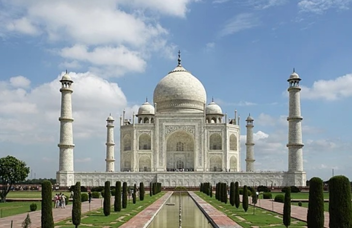
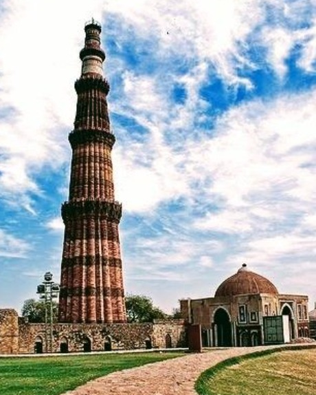
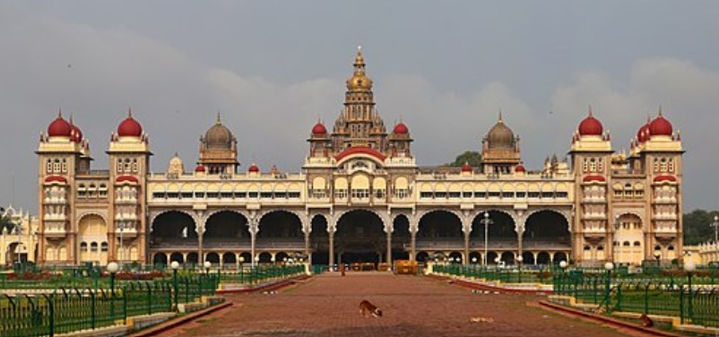

The Taj Mahal is an ivory-white marble mausoleum in Agra, India, built by Mughal Emperor Shah Jahan as a tomb for his favorite wife, Mumtaz Mahal. Completed in 1648, it is a masterpiece of Indo-Islamic architecture and a globally admired UNESCO World Heritage site symbolizing eternal love. Located on the bank of the Yamuna River, it is famous for its intricate design, four minarets, and beautiful gardens.
It was built by Mughal emperor Shah Jahan in memory of his wife, Mumtaz Mahal, after she died in 1631.
The structure is made of white marble and is situated on the south bank of the Yamuna River in Agra.
Recognized as one of the Seven Wonders of the World, it is a symbol of India's rich history and a monument to love.
The architecture combines elements of Islamic, Persian, and Indian styles.
The complex includes a mosque, gardens, and other buildings, and it took about 20 years and thousands of laborers to build.

The Qutub Minar is a UNESCO World Heritage site in Delhi, India, known as the world's
tallest brick minaret at 72.5 meters. Its construction began in 1199 by Qutub-ud-din Aibak,
and was completed by subsequent rulers. The monument is made of red sandstone and marble,
featuring five storeys with intricate carvings and balconies

Mysore Palace, also known as Amba Vilas Palace, is a grand historical palace in Mysore,
Karnataka, that served as the official residence of the Wadiyar dynasty. Designed in the
Indo-Saracenic style by British architect Henry Irwin, the present structure was completed
in 1912 after the previous wooden palace was destroyed. Known for its exquisite interiors
and stunning illumination during festivals, it is one of India's most popular tourist
destinations.
